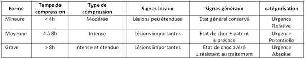

Bienvenue Sur Medical Education
Crush syndrome
Spécialité : pediatrie / traumatologie /
Points importants
-
Définition : ensemble des manifestations locales et générales secondaires à l'ischémie prolongée de masses musculaires importantes, liées à une compression intense et durable. Il s'agit d'une rhabdomyolyse traumatique massive
-
Dans sa forme complète, se caractérise :
-
par un choc hypovolémique, une hyperkaliémie et une insuffisance rénale
-
une morbidité élevée
-
Le déchoquage doit être débuté sur le terrain, pendant et surtout avant le dégagement de la victime. Il est centré sur 2 objectifs :
-
lutte contre l'hyperkaliémie (pronostic immédiat)
-
prévention de l'insuffisance rénale (pronostic à moyen terme)
-
Les rares indications du garrot sont décidées en fonction de la durée de compression et de l'état clinique de la victime
-
Ce n'est pas :
-
une rhabdomyolyse de posture
-
un syndrome de revascularisation
-
une compression musculaire interne non traumatique
Présentation clinique / CIMU
CONTEXTE
-
Pathologie des catastrophes : éboulement, explosion, accident, attentat, tremblements de terre + + +
EXAMEN CLINIQUE
- par un choc hypovolémique, une hyperkaliémie et une insuffisance rénale
- une morbidité élevée
- lutte contre l'hyperkaliémie (pronostic immédiat)
- prévention de l'insuffisance rénale (pronostic à moyen terme)
- une rhabdomyolyse de posture
- un syndrome de revascularisation
- une compression musculaire interne non traumatique
Présentation clinique / CIMU
CONTEXTE
- Pathologie des catastrophes : éboulement, explosion, accident, attentat, tremblements de terre + + +
EXAMEN CLINIQUE
Evolution en 4 phases
Prologue : la victime est dégagée vivante, c'est l'euphorie, mais...
- Noter l'heure de la décompression efficace
- Estimer la durée de la compression
- Contrôler la PA et les pouls périphériques
- Surveiller l'apparition de signes locaux : lividités, dureté des masses musculaires
- Rechercher les lésions associées : blast, polytraumatisme, brûlures...
1er acte : apparition franche de signes locaux
- Peau froide, livide, marbrée, érythème, pétéchies, phlyctènes
- Augmentation de volume du ou des membres concernés
- Dureté des masses musculaires, oedème élastique en « balle de tennis »
- Disparition des pouls distaux
- Zones de nécrose cutanée
- Troubles sensitivomoteurs allant jusqu'à la paralysie
-
Signes généraux :
- troubles psychiques mineurs
- polypnée
- tachycardie
2e acte : apparition d'un collapsus puis d'un état de choc
- Pouls filant, PA systolique effondrée, différentielle pincée
- Extrémités froides et moites ; marbrures
- Détresse respiratoire avec polypnée et cyanose
- Agitation anxieuse ou prostration
-
Risque majeur d'arrêt cardio-circulatoire par :
- désamorçage de la pompe cardiaque et/ou
- hyperkaliémie
3e acte : insuffisance rénale aiguë avec
- Oligurie à urines couleur « porto »
- Evoluant vers une anurie
SIGNES PARACLINIQUES SIMPLES
- BU : pH acide lié à une acidose métabolique
- ECG : recherche de troubles du rythme
- Glycémie capillaire
- SpO2 : recherche hypoxémie
CIMU
- Tri 1
Signes paracliniques
BIOLOGIQUE
Signent une rhabdomyolyse traumatique massive
- NFS (hémoconcentration)
- Ionogramme sanguin (acidose métabolique, hyperkaliémie)
- Hyperuricémie, hyperphosphorémie, hypocalcémie
- Lactacidémie
- Créatinine (insuffisance rénale aiguë fonctionnelle) avec élévation du rapport créatinine / urée plasmatique
- CPK > 500 UI/L ( > 5 x la normale)
- Myoglobinémie > 500 ng/L (> 6 x la normale)
- Myoglobinurie + +
- Bilan préopératoire : Groupe sanguin, Rhésus, TP, TCA
IMAGERIE
- Radio : recherche de fracture sous-jacente
Traitement
TRAITEMENT PREHOSPITALIER / INTRAHOSPITALIER
Principes de traitement du crush syndrome
- Lutter précocement contre l'hypovolémie
- Lutter efficacement contre l'acidose et l'hyperkaliémie
- Prévenir l'installation de l'insuffisance rénale aiguë (mécanisme mixte fonctionnel et par nécrose tubulaire aiguë)
- Traiter les lésions associées
- Analgésie
Stabilisation initiale
-
Lutter précocement contre l'hypovolémie :
- le plus tôt possible, avant dégagement
- voie d'abord veineuse la plus accessible, avec le meilleur débit
-
cristalloïdes : NaCl 0,9 % (éviter Ringer-Lactate) / colloïdes : HEA
- débit moyen 500 mL/h avant dégagement pour obtenir PAS > 90 mmHg :
-
Lutter efficacement contre l'acidose et l'hyperkaliémie :
- compression < 4h : pas de garrot, traitement médical seul
-
compression 4h < T < 8h :
- garrot avant dégagement
- lâchage progressif du garrot sous perfusion : bicarbonate 8,4 % (100 mL en 30 min) ± gluconate de calcium 10 % (10 à 20 mL en 3 min) ± 500 mL de G10% + 10 UI d'insuline ordinaire en 1h ± furosémide (80 à 120 mg en IVL)
- compression > 8h : pronostic vital engagé, vitalité des tissus compromise : garrot ± amputation de dégagement
Prévenir l'installation de l'insuffisance rénale aiguë en maintenant
- Une hémodynamique stable (PAS > 90 mmHg)
- Une perfusion tissulaire maximale
- Un équilibre acido-basique satisfaisant
- Une oxygénation maximale (IOT si nécessaire)
- Assurer une fonction rénale satisfaisante (diurèse > 60 mL/h)
Traiter les lésions associées
-
Ventilation efficace :
- trauma thoracique (PNO, hémo-PNO, douleur, contusion)
- traitement d'un blast associé
- prophylaxie et/ou traitement d'une inhalation
-
Hémodynamique efficace : assurer l'intégrité
- du contenant : hémostase
- du contenu : compenser une anémie aiguë
- de la pompe : contusion myocardique
- du système de régulation : douleurs (immobilisation, analgésie et sédation)
Prise en charge des lésions installées
- Le syndrome des loges : aponévrotomies (réapparition des pouls distaux)
- Nécroses musculaires : pas d'excision précoce
- Nécroses cutanées : excisions greffes
- Amputations de sauvetage quelquefois
Catégorisation et tri d'un crush syndrome en médecine de catastrophe
 _37 Tri d'un crush syndrome
Surveillance
CLINIQUE
-
PA, FC, FR, SpO2, EN ou EVA, diurèse / h
-
Pouls distaux, coloration cutanée/h
BIOLOGIQUE
-
Surveillance de l'alcalinisation urinaire possible par BU
-
Hémoglobine, glycémie capillaires
-
Ionogramme sanguin, hémostase, lactates, CPK / 8h
Mécanisme / description
CONSEQUENSES D'UNE COMPRESSION MUSCULAIRE INTENSE ET DURABLE
-
Ischémie musculaire avec acidose intracellulaire et diminution en substrat énergétique
-
=> inhibition de la pompe membranaire
-
=> fuite cellulaire de K+ et de phosphates, entrée intracellulaire massive de Na+ et Ca++, libération d'enzymes intracellulaires et de myoglobine dans le plasma
-
=> hyperkaliémie et oedème cellulaire
-
=> effet local = syndrome des loges : myo-oedème + +
-
augmentation de la pression interstitielle du muscle (> 40 mmHg)
-
aponévrose inextensible => véritable tamponnade musculaire
-
destruction mécanique du sarcolemme si pression > 240 mmHg
DECOMPRESSION
Mécanisme / description
CONSEQUENSES D'UNE COMPRESSION MUSCULAIRE INTENSE ET DURABLE
- Ischémie musculaire avec acidose intracellulaire et diminution en substrat énergétique
- => inhibition de la pompe membranaire
- => fuite cellulaire de K+ et de phosphates, entrée intracellulaire massive de Na+ et Ca++, libération d'enzymes intracellulaires et de myoglobine dans le plasma
- => hyperkaliémie et oedème cellulaire
-
=> effet local = syndrome des loges : myo-oedème + +
- augmentation de la pression interstitielle du muscle (> 40 mmHg)
- aponévrose inextensible => véritable tamponnade musculaire
- destruction mécanique du sarcolemme si pression > 240 mmHg
DECOMPRESSION
Effets locaux de la décompression
- Libération de cytokines => oedème interstitiel
- Revascularisation : circulation précaire et libération de métabolites toxiques
- Hématome périvasculaire : hémorragie, hypovolémie, bas-débit local => ischémie tissulaire secondaire
Effets généraux de la décompression
- Fuite de Na+, Ca++ et eau vers le secteur intracellulaire => choc hypovolémique => diminution de la filtration glomérulaire
- Elévation du K+, H+, des produits de dégradation => nécrose tubulaire
- Acidose, précipitation, cristallisation => obstruction tubulaire => insuffisance rénale aiguë
Bibliographie
-
Bywaters EGL, Beall D. Crush injuries with impairment of rénal function. Brit Med Journal 1941 ;march 22 : 4185 - 4190
-
Carpentier J.P. cours de capacité de médecine de catastrophe 2009
-
Kuwagata Y, Oda J, Tanaka H et al. J Trauma 1997; 42 : 470-6
-
Llach F, Fesenfeld A, Hausser M. the physiopathologie of altered calcium metabolism in rhabdomyolisis indured acute rénal failure. N Engl J Med 1981 ; 117 - 123
-
Shimuzu T, Yoshioka T, Nakata et al. J Trauma 1997 ; 42 : 641-6
-
Urgences et réanimation en milieu militaire pp 93 - 109
Auteur(s) : Philippe GARRY